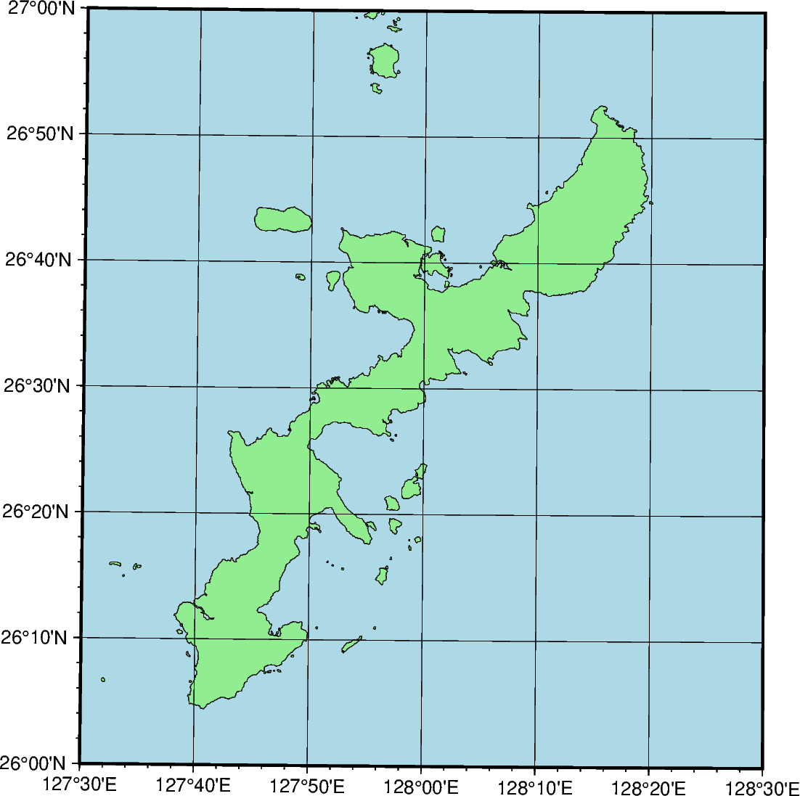

Note
Go to the end to download the full example code
Universal Transverse Mercator
A particular subset of the transverse Merctor is the Universal Transverse Mercator (UTM) which was adopted by the US Army for large-scale military maps. Here, the globe is divided into 60 zones between 84°S and 84°N, most of which are 6° (in longitude) wide. Each of these UTM zones have their unique central meridian. Furthermore, each zone is divided into latitude bands but these are not needed to specify the projection for most cases. See Figure Universal Transverse Mercator for all zone designations.

Universal Transverse Mercator zone layout.
In order to minimize the distortion in any given zone, a scale factor of 0.9996 has been factored into the formulae (although a standard, you can change this with PROJ_SCALE_FACTOR). This makes the UTM projection a secant projection and not a tangent projection like the transverse Merctor. The scale only varies by 1 part in 1,000 from true scale at equator. The ellipsoidal projection expressions are accurate for map areas that extend less than 10° away from the central meridian. For larger regions we use the conformal latitude in the general spherical formulae instead.
uzone/scale or Uzone/width
The projection is set with u or U. zone sets the zone for the figure, and the figure size is set with scale or width.
import pygmt
fig = pygmt.Figure()
# UTM Zone is set to 52R
fig.coast(
region=[127.5, 128.5, 26, 27],
projection="U52R/12c",
land="lightgreen",
water="lightblue",
shorelines="thinnest",
frame="afg",
)
fig.show()
Total running time of the script: (0 minutes 0.212 seconds)